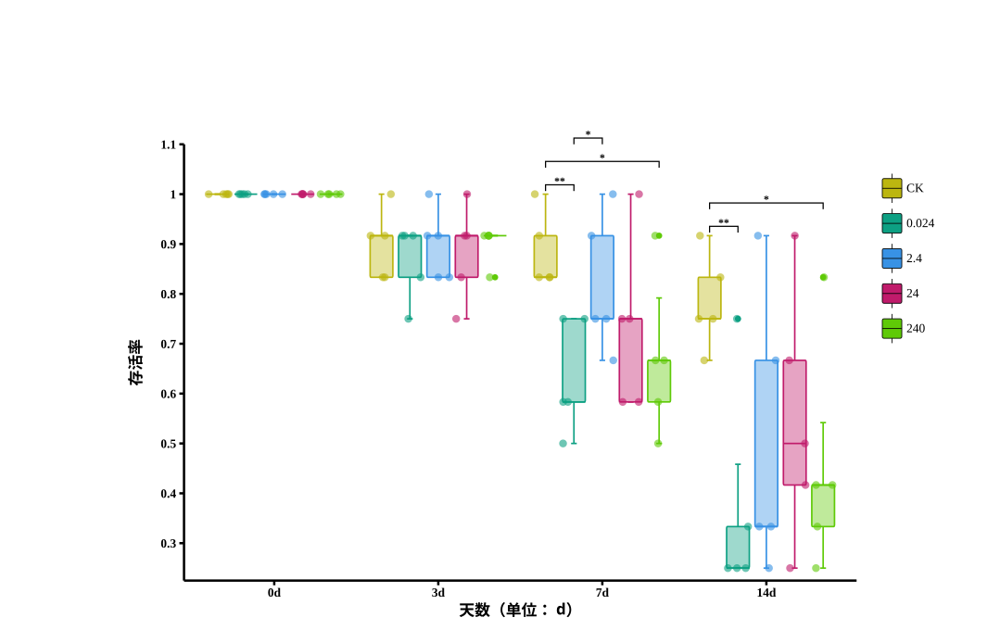
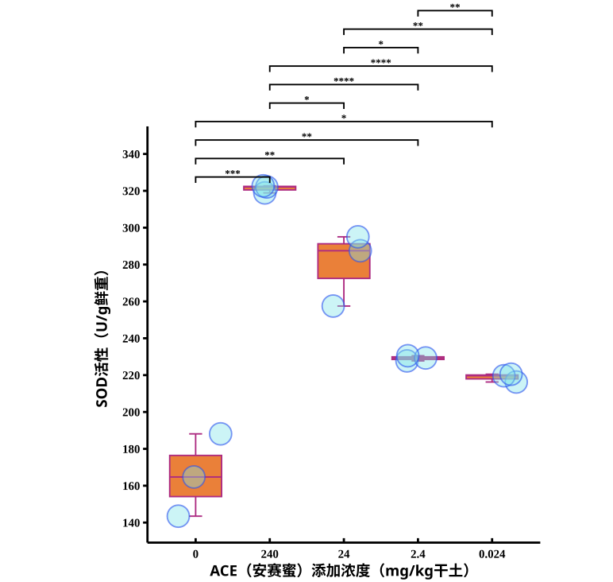
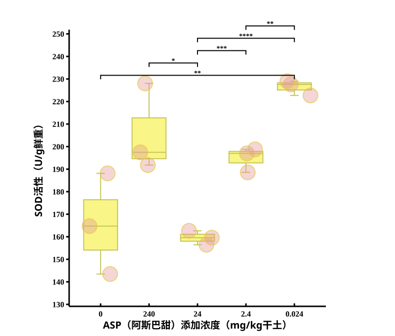
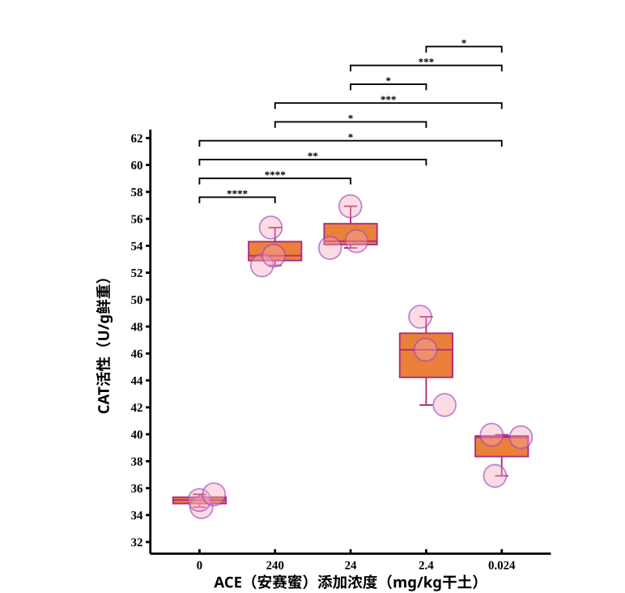

Why earthworms, why sweeteners
Aspartame, acesulfame potassium, and a handful of other artificial sweeteners are FDA-approved and everywhere: food, drinks, even livestock feed. The catch is that animals and humans barely metabolize them, so they pass through largely intact and keep accumulating in the environment. China is reportedly the world's largest consumer of these compounds, and they've already turned up as contaminants in pig-farm wastewater, surface and groundwater, drinking water, soil, and even air.
There's a real research gap here: plenty of work exists on sweeteners in gut microbiota, antibiotic resistance, and aquatic toxicity, but almost nothing on soil invertebrates specifically. I used Eisenia fetida, the standard soil bioindicator earthworm, to get a first read on that risk.
Two experiments, run in sequence
Filter-paper acute toxicity (OECD 207). I exposed individual worms to aspartame, acesulfame, or a 1:1 mix at 5 concentrations plus a control, 10 replicates each, 15 treatment groups total. Kept at 20°C, 80% humidity, checked every 6 hours over 48 hours. This step mapped out a lethal range and set the doses for the next experiment.
14-day soil incubation. Four environmentally-relevant soil concentrations (0.024 to 240 mg/kg dry soil) per sweetener, 5 replicates each, plus a cow-manure-soil control. I checked mortality at days 3, 7, and 14, then dissected the survivors and assayed their tissue for superoxide dismutase (SOD) and catalase (CAT) activity, using colorimetric kits and Kruskal-Wallis tests for significance.
What the data showed
At high concentrations, survival dropped sharply (up to 100% lower than control, p<0.05), with worms showing curling, lesions, and clitellum swelling before death. Oddly, at the lowest concentrations, some sweetener-treated groups actually survived better than the control, a hormesis-like effect I think is worth its own follow-up study.


Both enzymes rose significantly with sweetener exposure overall (SOD: p=0.002; CAT: p=0.003), but the two sweeteners behaved differently. Acesulfame pushed both SOD and CAT up in a clean, dose-dependent line, peaking around 320 U/g SOD activity at the highest concentration. Aspartame's effect was messier: activity dropped, then rose, then dropped again as concentration changed, the opposite shape from acesulfame.



What it means
Both sweeteners appear to be mildly toxic to Eisenia fetida: a little goes a strangely long way (that low-dose survival boost), but enough of it impairs survival and forces a measurable antioxidant-enzyme response. Acesulfame's response was consistently stronger and cleaner than aspartame's, most likely because it's more water-soluble and persistent, so the worms actually take up more of it.
I'm upfront about the limits here: soil can buffer and mask real toxicity, a single enzyme reading is a noisy biomarker on its own (a comet assay for DNA damage would be a sharper follow-up), and real soil never has just one sweetener in it. Still, this is a first data point for something almost nobody had measured, and I'd propose SOD/CAT activity as a usable early-warning biomarker for future risk assessments of these very common, very persistent contaminants.